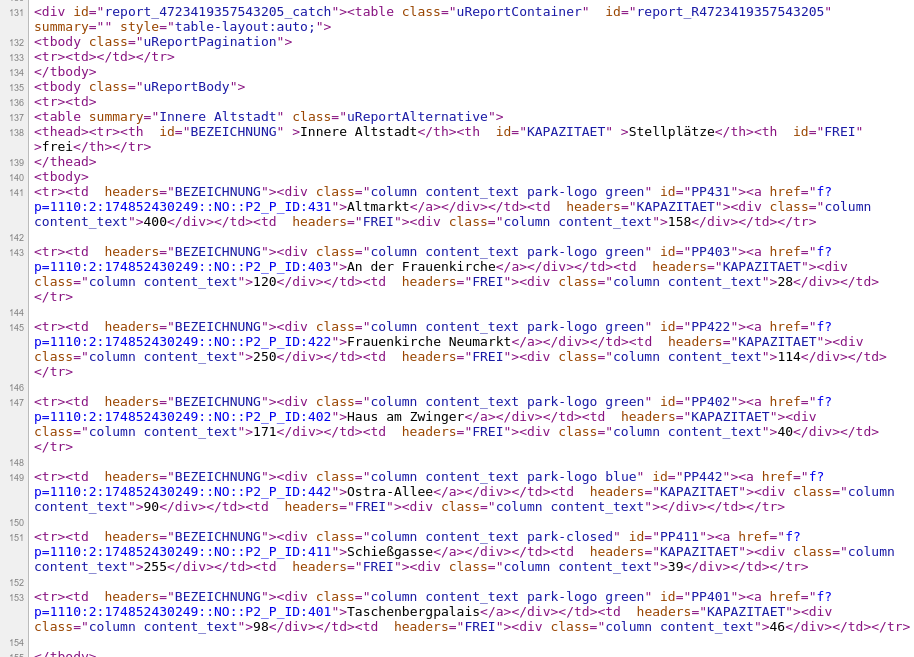
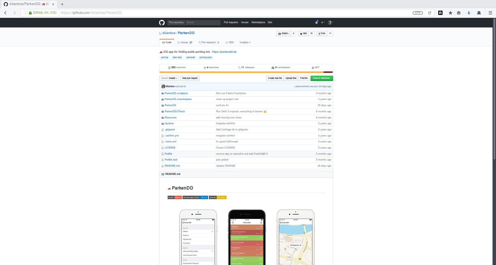
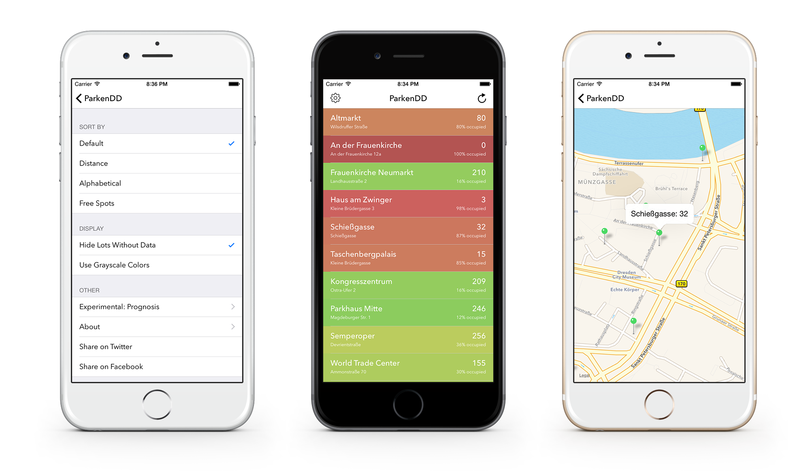

Open Data
Lightning Talk von Stephan Fischer
Stephan
stephan-fischer.de | @22uhr | tocsinDEInhalt
- Was ist eigentlich dieses "Open Data"?
- Ein paar schöne Beispiele.
- Wie funktioniert das? Beispiel ParkenDD.
- Wie man mitmachen kann.
- Fakultativ: Kleine Fragerunde.
Oh.
Bildquelle: http://blog.tasteanalytics.com/wp-content/uploads/2016/04/Open-Data.png
Oh.²
Bildquelle: https://upload.wikimedia.org/wikipedia/commons/thumb/d/d8/LOD_Cloud_Diagram_as_of_September_2011.svg/2000px-LOD_Cloud_Diagram_as_of_September_2011.svg.png
Nett :)
Bildquelle: https://www.flickr.com/photos/30827420@N04/14475473790
2.) Beispiele
(Hoffentlich schläft noch keiner...)
Hamburg in Echtzeit
Datenwaben: Deutsche Bahn
Mietpreise in Berlin
"Genau, ich mach einfach einen Fashionblog [...] und mache Fotos, von Streetart und interessanten Leuten! Hauptsache hier in Berlin!"
ParkenDD
NASA
Oh³: Nicholas Felton
Felton.com | Beispielseite | Super Angebot: Feltons Daten von 2014 für läppische 30$
Bildquelle: https://www.photopinups.org/wp-content/uploads/2013/04/jackie_chan1.png
Bildquelle: https://www.photopinups.org/wp-content/uploads/2013/04/jackie_chan1.png
3.) Ausführliches Beispiel: ParkenDD
Schritt 1: Finde. Verwertbare. Daten. Bitte. D'oh.
Problem: Daten nicht maschinenlesbar (z.B. CSV)
Schritt 2: Filtern.
Schritt 3: Daten importieren; Maschinenlesbarkeit (JSON)

Schritt 4: Coding.

Open-Data-prädestiniert: Open-Source-Code auf GitHub.
Zack, fertig: App.

Erhältlich für Android, iOS und sogar Windows Mobile: ParkenDD.de
4.) Mitmachen
Bildquelle: https://twitter.com/OpenDataDresden
Fragen?
Danke für eure Aufmerksamkeit!
Diese Folien noch mal anschauen: git.io/vHNKm
Diesen Lightning Talk gibts noch mal um 23:00 Uhr. Natürlich im selben Raum (E009) :)